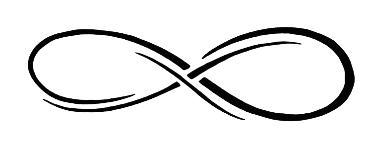

Visit my Google Scholar Citations

Visit my shared bibliography on NCBI
FREDERIC COMMO, Engineer & PhD
Data ScientistBioinformatics & Oncology
Work Experience
2014 – present
Data Scientist at Gustave Roussy, Villejuif, France
Project Leader – Precision Cancer Medicine & Molecular Screening Programs
Deployment of data transfer/storage and analysis solutions for molecular screening programs at Gustave Roussy.
The Interactive aCGH Viewer is available on server. It allows non-bioinformaticians to interact with genomic profiles.
2012 – 2014
Data Scientist – Visiting Scientist at Sage Bionetworks, Seattle, WA
2007 – 2012
Project leader at Gustave Roussy, Villejuif, France
Department of Translational Research & Inserm U981 (Pr Fabrice André)
SAFIR01: Project management & data analysis. Member of the Steering Committee and the Tumour Board Committee
2004 – 2007
APHP non-active status to join Compiègne University of Technology.
1993 – 2004
Research Assistant. Dpt of Pathology, TENON Hospital, Paris.
1986 – 1993
Laboratory Technician. Dpt of Pathology, Jean VERDIER Hospital, Bondy, France.
Education
2015
PhD in Oncology & Bioinformatics, University Paris-Saclay
Genomic analysis within precision medicine: optimisations & visualization tools. Supervisor: Pr. Fabrice André
2007
Engineering Diploma & M. Sci., Compiègne University of Technology (U.T.C.)
Viva voce: Molecular portrait of ependymoma recurrences (Plos One 2010 as co-1st author).
1985
Higher Technician Degree
Lab Technician School, Pitié-Salpêtrière, Paris
Continued Education
2013
2012
1995 – 1998
1991 – 1992
SKILLS
Data Analysis
Programming
Languages
TEACHING
2012
2008 – 2010
 PACKAGES
PACKAGES